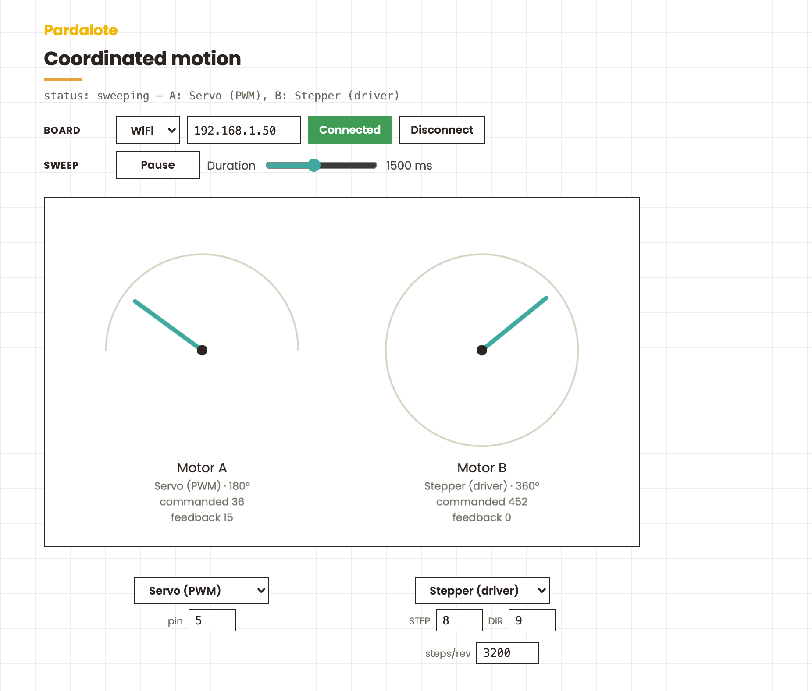

Two different motors — mix a servo, stepper, or bus servo — sweep in perfect unison using a group.

Two motors sweep in unison using a Pardalote group. Each motor's type — PWM servo, serial bus servo, or stepper — is chosen independently from the popup under its dial, so the pair can be mixed (the default is a servo + a stepper). Both motors ping-pong between two positions, arriving together on every leg. Each dial visualises the motion — a 180° gauge for PWM servos, a 360° dial for bus servos and steppers.
This is the p5.js demonstration of group.writeTimed() / whenDone(): one call
moves both motors, and each motor type reaches its target its own way (bus
servos via matched-speed SyncWrite, PWM servos via on-board interpolation,
steppers via a board-timed constant-speed move) — all in one WebSocket message.
Any Pardalote board (UNO R4 WiFi or ESP32) plus two motors of any type:
| Type | Wiring (defaults — editable under each dial) |
|---|---|
| Servo (PWM) | two servos on pins 5 and 6 |
| Bus Servo (ST) | two Feetech ST servos, IDs 1 and 2, on the serial bus |
| Stepper (driver) | two STEP/DIR drivers on pins 2,3 and 8,9 |
| Stepper (4-wire) | e.g. 28BYJ-48 via ULN2003 — IN1–IN4 on 8,9,10,11 and 4,5,6,7 |
The Arduino sketch just needs the matching extension(s) included — the simplest is to include all three so you can switch type without re-flashing:
#include <Pardalote.h>
#include <PardaloteServo.h>
#include <PardaloteBusServo.h>
#include <PardaloteStepper.h>
void setup() { Pardalote.begin(); }
void loop() { Pardalote.run(); }
This is a tool — it works out of the box, no code editing:
index.html in a browser.The browser remembers the IP, motor types, and pins for next time. Without a connection the dials still preview the sweep.
| Control | Action |
|---|---|
| Popup + pin fields under each dial | choose Servo / Bus Servo / Stepper and its pins/ID for that motor (rebuilds the group) |
| Pause / Resume | stop and start the sweep |
| Duration slider | time per leg — both motors still arrive together |
status: reconnecting… until it does). The feedback readout shows each motor's real
position once polling returns values (bus servo / stepper).group.write) to establish a known
start — see the note on first moves in the Groups docs.low / high values in TYPES to change each type's sweep range.